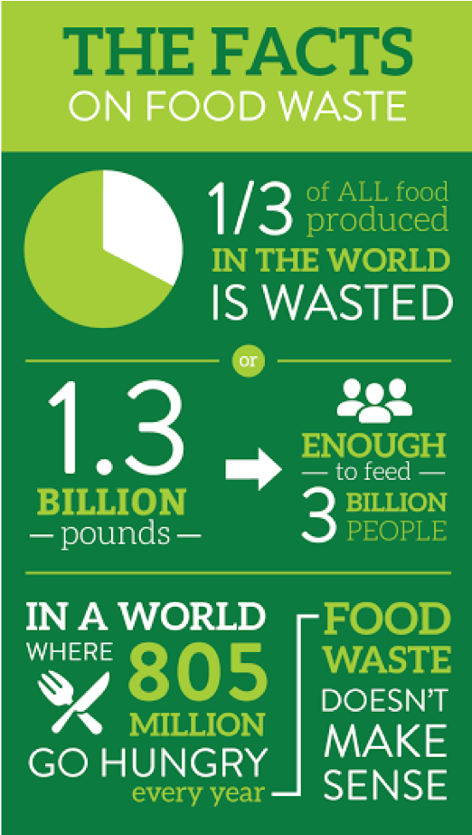

Restaurants produce more food than they sell and contribute to about 40% of Americas food waste.
My name is Daraja Gonsalves, I've made this site for my MMP100 course. The social cause I have chosen to research is Food Waste (primarily in America.)
Restaurants, grocery stores, and food factories are the biggest contributors to food waste since these institutions discard food usually because it is not “good enough” to display.
“Waste not, want not.”
A legendary saying that I am sure we are all familiar with. What does it mean? Simply put, one could not want something they are aware that they have wasted. Working in the Food industry I see heaps of perfectly good food thrown away daily. It’s truly heart breaking knowing there are some in need. America comes sixth on a general list of food wastage across the globe. In addition, the United States carries a very high poverty rate, to be more intimate, our very own New York City owns 77,000 average of a whopping 8.6 million homeless people in need of shelter and food. Because of New York’s dense population, we may not be able to find sufficient and comfortable shelter, though we may at least be able to provide food.
Copyright © 2019 Daraja Gonsalves - All Rights Reserved